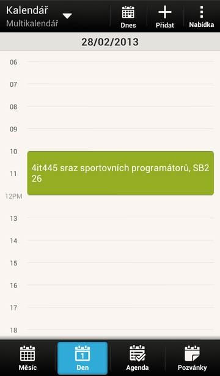

Hlavním účelem aplikace myEvents je snadný přístup k informacím o událostech konaných studentskými organizacemi. Po provedení první synchronizace jsou události uloženy ve vašem zařízení a můžete je prohlížet i když nejste připojen k internetu.
 Hlavním zdrojem informací je kalendář, který máte na svém zařízení nainstalovaný. Lze ho otevřít mimo jiné tlačítkem v horním panelu / menu Otevřít kalendář. Po provedení první synchroniace přibude kalendář myEvents, ve kterém jsou události uloženy. Použití je stejné jako například v případě Google nebo Facebook kalendáře.
Dalším zdrojem informací je také základní obrazovka. Ta poskytuje informace o nejbližších konaných událostech. Klepnutím na obrázek nebo název události zobrazíte detaily příslušné události v kalendáři.
Ve výchozím nastavení jsou odebírány všechny události. Můžete si ale nastavit, které události chcete odebírat a které zas ne. Více informací najdete v kapitole Nastavení.